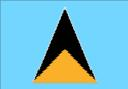

Santa Lucía
|  |  |
Información general
Nombre oficial: Santa Lucía
Área: 617 km²
Costas: 158 km
División política: 8 regiones administrativas:
- Anse-la-Raye
- Canaries
- Castries
- Dennery
- Gros Islet
- Micoud
- Soufriere
- Vieux Fort
Unidad monetaria: Dólar Caribe-Este
1 Dólar Caribe-Este = 100 centavos
Idiomas: Inglés (oficial); patois (creole de Dominica), hindi (no oficiales)
Fiesta nacional: 22 de febrero, Día de la Independencia
Gentilicio: Santalucense
Hora oficial: GMT -4 horas (normal/verano)
Miembro de: ONU, Commonwealth, CARICOM, OEA
Curiosidades
La isla es montañosa y de origen volcánico. Dos volcanes gemelos el Gros Piton y el Petit Piton se alzan desde el mar.
La zona donde se encuentra Santa Lucía es fuente de energía geotérmica, cuya explotación comenzó recientemente.
Perfil Ecónomico
Perfil Demográfico
Población: 164.791 hab.
Densidad de población: 305,7 hab/km²
Fuente http://www.stlucia.gov.lc/docs/EconomicReview2005.pdf
Perfil Cultural
Alfabetismo: 80%
Religión:
- Católicos: 86,6%
- Protestantes: 7,3%
- Anglicanos: 2,5%
- Otros: 3,6%
Sistema de Gobierno
Constitución vigente: 22 de febrero de 1979
Sistema ejecutivo: Monarca británico (Jefe de Estado, representado por el Gobernador General), Primer Ministro, Gabinete, Fiscal General.
Sistema legislativo: Monarca, Asamblea (diecisiete miembros elegidos por sufragio universal para un término de cinco años) y Senado (once miembros designados por el Gobernador General, seis a propuesta del Primer Ministro, tres del líder de la oposición y dos que representan a diversos grupos sociales).
Aproximación histórica
Santa Lucía es una isla montañosa, de formación volcánica. Dos volcanes: el Gros Pitón de 785m y el Petit Piton de 738 m, se levantan desde el mar en la costa sudoeste de la isla.
La isla se encuentra en una zona geotérmica y este tipo de energía se ha comenzado a explotar recientemente. La altura máxima es el monte Gimie, con 9 55 m.
La principal actividad económica es la agricultura que emplea al 30% de la fuerza laboral siendo el banano el producto principal de exportación. El turismo se ha convertido en un sector importante en la economía de Santa Lucía.
Santa Lucía fue descubierta por Cristóbal Colón en 1502. Disputada por Francia e Inglaterra, se convierte finalmente en colonia británica en 1814. Santa Lucía logra la autonomía para los asuntos internos en 1967, bajo la tutela británica. Obtuvo su independencia total en 1979.
«-- ir al comienzo
«-- regresar